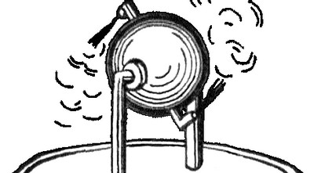

Crepusculum erat et āēr ex harēnīs calidīs ad caelum adhūc ascendēbat. Plūrēs iam intus erant quia nūper hominēs noctibus abreptī fuissent. Reia Valēns, fēmina flammicomantibus comīs viridibusque oculīs, per septimānās iam causam invenīre temptāverat, et omnia indicia pȳramidem monstrābant.
Reia popīnam ambulābat sed nōn ad cēnandum: Iuxtā popīnam erat mēnsa lignea cum arcā magnā aēneāque suprā eam. In apice arcae incīsūra erat fundōque forāmen. Reia lagunculam in forāmine posuit et nummum in incīsūram dēmīsit. Aliquid intrā arcā sonitōs mēchanicōs fēcit et aquam sacram in lagunculam effundēbat. Prīmā lagunculā plēnā, Reia aliam implēvit. Fēlēs ātra pedem suum lambēns prope mēnsam sedēbat, cui Reia subrīdēns dīxit “Haec sunt perūtilia!”
Pȳramidem iam īvit copide armāta. Forīs apud aditum fax in pariete incendēns erat, quam Reia cēpit. Deinde in terram dēscendit. Iam in fundō scālae longae ante ingēns conclāve substiterat, nam solum omnīnō tēctum anguibus venēnātīs erat. Reia ā coxā sacculum sustulit, quī herbam quandam* continēbat. Herbam ante sē spargere incēpit et ecce: Serpentēs herbam fūgērunt quasī ignis esset. Hōc modō Reia mare anguium dīvīsit et in iter subterrāneum perrēxit.
Reia cum vēnisset ad bivium subitō ā viā laevā gemitūs sonitōsque titubandī audīvit. Circā angulum mumia appāruit et, cum Reiam vīderit, strīdēre coepit statimque Reiam petīvit. Ea lagunculam aquae sacrae in mumiam iēcit, quae contrā pectus eius confrēgit. Mumia ululāvit et gradum retrō fēcit cum fūmī ā fasciīs ascenderent. Reiae tamen vīsum est tantum īrātiōrem sē mumiam confēcisse, quamobrem in viam dextram circum alium angulum fūgit.
Aut melius dictum fugere finxerat, nam post angulum Reia copidem suam strīnxit et mumiam expectābat; cum in sequendō rūrsus apud eam appāruit, gladiō suō monstrum percussit. Iam pectus eius cavum habēbat et fasciae scissae ē mumiā pendēbant, sed continuē ad virāginem titubābat. Deinde Reia fūgit rē vērā, per andrōnem in tenebrīs altīs tendēntem. Post multum currendī ea ad aliud bivium pervēnit et viam sinistram ēlēgit, spērāns nē mumia eandem ēlēgerit.
Nōn multum post tempus haec via Reiam in parvum conclāve obscūrum dūxit. In mediō conclāvis columna saxea stābat et apud eam māchina, quam Reia per nōmen “Pila Aeolī” agnōvit*, in quā aēneum clausum aquā replētum et sphaera ex eādem māteriā factā fistulīs coniungēbantur. Sub illā māchinā labrum oleō plēnum erat. Cūr māchina hīc erat Reia dīcere nōn poterat sed, consiliō in animō, oleum in labrō face tetigit quod statim in flammīs ērūpit. Post paulum temporis sphaera metallica fūriōsē volvere incēpit magnōque strepitū, et paene simul Reia gemitūs familiārēs ex andrōne audīvit. Reia post columnam stābat cadāverque animātum expectābat.
Mumia in conclāve intrāvit versusque columnam lentē ambulāvit. Per tōtum tempus Reia circum columnam movēbat ut ē conspectū eius manēret. Cautē Reia ā tergō columnae spectābat et in solō fasciam longam vīdī post mumiam tractam. Quam celerrimē Reia fasciam cēpit et in Pilam Aeolī iniēcit. Fasciā ā parte māchinae vertentī captā, mumia repente ad automaton revolsa et bis in circulō versa fuit. Iam magna pectoris pars exposita erat.
Foeda carō rūgōsa visibilis erat et odor taeter conclāve implēvit. Opportūnē Reia in pectus mumiae ultimam lagunculam iniēcit, quae scīlicet sīcut prīmam confrēgit. Sed hōc tempore, fascīs absentibus, fūmī scatūriēbant et mumia ululāns corporeque quatientī in solum cecidit; nōn multum post movēre dēsiit tantumque sonitus Pilae Aeolī audiēbātur.
Cum ēmersisset Reia tandem ē pȳramide eandem ātram fēlem ē popīnā vīdit. Hāc comite ad illum locum revēnit et cervisiam bibit. Sīc Reia Valēns aliō diē vīvat ut aliās umbrās aemulētur.*
Orīganum Dictamnus appellātur. Hērōn Alexandrīnus hanc māchinam invēnit. "Aeolipyle" vel "Pila Aeolī" vocābātur. Aeolus deus ventōrum est. *Aemulārī umbrās = contrā umbrās pugnāre